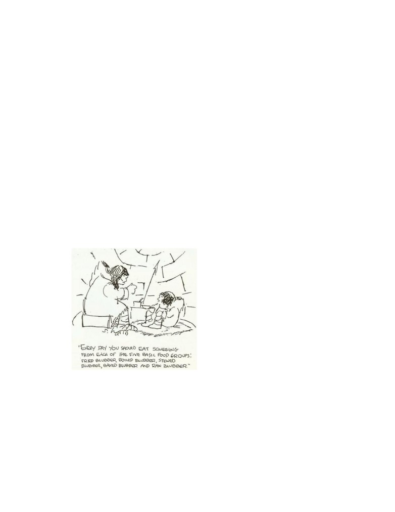

Contents
1
The hungry human
4
2
Are you surviving the mushroom cave?
8
3
Man is a hunger creature
11
4
On what kind of foods do you exist?
12
5
Fruit eating is least offensive
13
6
The self-consuming body
14
7
What to expect from a fruit diet?
17
8
Food is an instigator, not a life-giver
19
9
Narcotic food
20
10
No need for hunger
21
11
Unnatural activities force unnatural foods
22
12
Understand cravings
24
13
The simple rules of eating
26
14
Fruits speak for themselves
28
15
Eat with your mind
29
16
Toleration is a slow death
30
17
Endorphins
33
18
The mind cannot save the glutton
34
19
Pain is a heavenly guide
34
20
Disease is a soul saver
36
3
21 Old wive’s tales
39
22 Not doing but resting heals
40
23 The house of health
42
24 Crystallized wants
42
25 Hershey bars
44
26 The barroom
46
27 The castle in the air
47
28 All food is destructive
48
29 The world of duality
50
30 The body is a child of the mind
51
1
The hungry human
Humans have descended so deeply into the realm of creation that they sud-
denly gain awareness in a world of animals. They entered it from the un-
derside of a woman. Did they not dive head first into the center of Mother
Earth? They certainly have not come forth from their father’s bosom as
they would want to believe. No one likes to see that a human begins his
life in a state of perversion and journeys continuously deeper into its realms.
Humankind as a whole is doomed and will remain so because it has the same
drive as the animal to survive in it. How many have ever become aware of
their horrible condition? Just to the contrary, humans don’t want to see
themselves as a symbol of an excrement and thereby they lose all sensing for
a higher reality of life.
Men and women have forgotten that they came from a higher world. They
do not know what they are supposed to be doing here on Earth, nor are they
going to know what will happen when they lose their bodies. To find out
that they alone are responsible for their life must remain hidden because it
would expose their hatred for God. Instead they invented a god of infinite
love who forgives them for all their wrong without having made correction.
4
An all loving God lets them go on with their life in a doomed universe of
space and time.
Men as well as women have chosen to serve a lower nature in themselves.
They believe that they must get their sustenance from a visible world. But it
came as a suggestion from an evil source through the mouth of a woman who
enticed the man to eat a material substance. And as he obeyed he became
that lost human being he is today.
The lower realm of creation has the existence of death. It gives power to
good and bad emotions, it requires a need for food, a desire to procreate and
to build an identity of Self. Unconsciously remains the knowledge that all
this is a fake existence and the result is fear of death.
Why have people forgotten to see all this and why does rage come up
whenever they are reminded of what they are doing? It started far back in
Eden of Immortality where history tells of the first man who disobeyed God
by eating the food of the woman. This fatal decision became his death. Now
people hide their guilt with an expression of rage whenever they are reminded
of it.
There exists a knowledge from ancient scripture, that is not yet emas-
culated. Adam had made a wrong choice as he decided to feel lonely. He
grew an evil (Eve) nature inside himself which came in existence as his lower
body. It began at his lowest rib and is represented in his emotions, his need
for food, his capacity for procreation, his urge to socialize, move around, play
with matter and make a secure home for himself. Adam escaped into Eve.
Eventually he will have to live a life as a woman who is caught entirely inside
the lower body.
The woman began her life as man fell out of himself. She lends herself
as the mouthpiece of the serpent force. Mother Earth’s nature is feminine
in design and when human kind enters into it, it becomes endowed with
the spirit of female. The male is entangled with woman through mother,
daughter, mistress and wife and thereby is turning into a female himself.
The law says that one becomes what one loves.
Man’s Odyssey into a woman’s body tells of a journey that leads to greater
dependencies with every incarnation. Soon there is no more strength to turn
around and one is doomed to enter the animal and plant kingdoms.
Why does Mankind suppress the knowledge of how to get out of his trap?
Because it already is on the side of the female, and all of its life is dominated
by the serpent force. Every individual had been bonded to it at birth. As
long as a man looks to the woman he will not see his doomed existence.
5
One of the deepest imprints on a human brain is pain when experienced
in the infant stage. That determines what his future life will be, because
it has cut grooves into the brain and later as a man, he cannot get out of
them whenever he thinks and feels. So it comes that early experiences act
up throughout all of man’s life. Although at birth one came with a freshly
impressionable mind, it has hardened with the growth of the body. The
process is similar to a concrete slab when a footprint is made upon it, and
which later cannot be erased. All early pain, fear, witholds of physical needs
are unerasable in the grown up stage and one falls into them whenever an
outer experience passes by. A human has reacted to pain with his physical
system before he could scream, he screamed before he could speak and spoke
before he could communicate. Early pain has been spilling over from one
system to the next and did its damage. It has produced a malfunctioning
entity. Although a man may be knowing all this, he still stumbles and falls
whenever he acts.
The higher world can be reawakened through the practice of self-observation.
It will show the wrong direction taken and that it must be reversed. One
becomes aware that all evil enters a human being from outside in the form
of a hypnotic suggestion. It reigns the world but it cannot affect the one
who awakens to a new direction that comes from inside. Only a hypnotized
human obeys suggestions that come from outside. Therefore, the cause of all
craving is a choice to eat from a world that has its foundation in a serpent’s
suggestion.
Are you inwardly our outwardly directed? There is a law that says:
Whatever controls you will also comfort you. If you are outwardly direted,
an outside world will support you. It will maintain you by giving you its
life. Now you are controlled by this world’s knowledge, by emotion, family
and friends, by a need to dominate the environment and to become its ruler.
Don’t you see that all these are phantoms that have no substance at all?
That they all came into existence in support of a rebellion against God’s
warning not to go into a certain direction?
It all began when Adam decided to disobey God. As a result he became
aware of a lower creation of matter, energy, space and time . All this hap-
pened so very gradually that it veiled an awareness of it. Instead of instant
death, humans are being slowly put to death. Awakening means to see all
this. It brings an urge with it to totally reverse one’s life. Wouldn’t one take
the hand out of the fire the moment one became aware of it?
In a physical universe, man has surrendered his life to emotionalism (food,
6
sex, music, art, etc) and ego-manifestations, (family, business, prestige and
ego-accomplishments). He clings to seeing himself as a successful leader of
society. But depression and anger is continuing to molest him, so he resigns
himself to a life that deadens the awareness of their existence.
To whatever you attach yourself affects you negatively; and the longer
you live with it, the more it enforces its life on you. When at death it is torn
away you only want it more. And that’s what you get again. You defend your
dependencies and believe that they are necessary for your existence. You do
not want to find out that this is the animal life, instead you believe that your
capability to think makes you different. Again and again you escape into a
lower life. When you are told that this is not life you say, “But everyone is
the same as me!” Don’t fall for this lie because you can be different.
There is something about the guilt of disobedience that does not want to
be seen and it put out with an escape into a lower world.
What is not known is that with the entrance into Earth everyone has
taken the wrong direction. And they are channeling their guilt deeper into
their bodies with wrong foods, wrong sex and a megalomanic ego.
So you were little and you were angry. Anger was not given to you, you
brought it with you as you entered this Earth, but your parents punished
you for expressing it. To escape from pain you suppressed your anger by
channeling it inside your little body which later began to malfunction because
of the damage it had done. Getting accepted and loved meant everything
to you, so you bonded with your parents because you were incapable to
change your nature at that time. You lived under the curse of childhood
and had no other choice but to conform and become a social being. In
your ignorance your drive to survive physically meant life to you because
this world’s love and acceptance was all you had left as a child and later
you escaped your unconscious guilt by indulging in more food, more sex and
more ego-acceptance.
Society encourages man to either suppress or express pain because it fears
nothing more than to expose the cause of it. To discover that one is a “God
Hater” is too much. Society’s very essence is to glorify a visible world and
for man to break away means death to his known life. He is bonded to it by
those first imprints that were made as he entered Earth.
Earth’s population consists of humans who fight for survival in a forever
dying world. They traverse a road on which all falsehoods peregrinate. Hu-
mans consume their world with a hunger for “news” that reports gossips,
accidents and intrigue. They are bound to a phantom life like a stunned
7
animal is caught in the headlight beam of an oncoming car. If told of the
danger, they become very angry. They are driven to kill their souls and that’s
it.
If you are the one out of a multitude who has an awareness of danger, if
you really see that you live in a very hazardous and menacing place inside and
outside yourself, you will get out fast. Only that gives you back control over
body, mind and emotion. They now become your tools for rescue. The whole
of society will never know this. Psychiatry, psychology, politics, medicine,
religious ministers are making you think you are alright as long as you believe
in God. But that is not enough. They don’t know anything about themselves
and absolutely nothing about the fact that they are living in a dying world
that takes everyone along into its abyss. Unconsciousness keeps on building
healthy bodies, big families, romantic atmospheres, refined mental concepts,
and sterile places. But now you know that all of this is deadly, you will
escape.
O generations of vipers, who hath warned you to flee from the
wrath to come? — Math
2
Are you surviving the mushroom cave?
This tale tells about a father’s son who has made a wrong choice. What
follows is not for fainthearted to hear because it takes courage to face the
results of one’s wrong actions. This story is meant for those who want to
return from their journey. It is a story that wakes up the dream.
It all began when a son derived pleasures from opposing his father’s will.
Thereby he had to live without his blessings and oblige himself to journey
into the wilderness.
The physical dream world is such a wild place where a man will fall from
one mishap into another. It is a place where one loses his way and ends up
in a ditch.
That actually happened to the disobedient son in this story. He was
laying in the ditch with an aching body and as he looked around in despair,
he suddenly noticed an opening to a vast cave,. As he crawled inside, he
found trance-inducing mushrooms growing all over its walls and he thought,
“drugging myself would be just right!”
8
Self-destruction will turn into a pleasurable desire to a resentful man,
and what followed became catastrophic — his state of bitterness turned into
a hate for his father. From now on, whenever he was confronted with a
suggestion that said: “No! You can’t have your way,” he became angry. And
to escape the resulting pain he went deeper into the dream. He disconnected
himself from his “guilt feeling conscience” (Soul) and escaped into a “will of
his own” (ego). Now at last he could do what he wanted to do — to find the
fulfillment of all his hidden desires. It became a life that was experienced
apart from his father’s will.
But only too soon did he wake up to the awareness that his life was a
nightmare and he ate more mushrooms. This went on for a long, long, time.
Planet Earth serves as a mushroom cave where humans can do what they
please and get away with it. And when the awareness of their futile lives
enters into their dream, they quickly conjure up mushroom-related activi-
ties.
(smoking, drinking, eating, worshiping, entertaining, working, exercis-
ing, etc.)
As the body of the caveman became less able to absorb the poisons, the
awakened state began to filter into the dream. The true condition came to
the surface. The pain of wrongness was unbearable and he stormed for the
opening. But — there was no opening. What was left of the way out had
shrunk to the size of a fist. He was buried alive and he screamed and hollered.
Had the opening disappeared? It really had not — anger had distorted his
perceptions. Unconsciousness had blocked out the pain but not the results
of his wrong acts. Eating intoxicating substances had the effect of producing
a growing ego-body which now threatened to squeeze him out into a never,
never world where escape from pain would become impossible. Contemptu-
ously he ate more mushrooms. The trance that followed came abruptly to an
end when his growing body had run out of space — the cave simply squeezed
him out of his body. Extreme hate became his only life. Unconsciousness
is a deliberate act, but nature came to his rescue and let him escape into
the body of a dog. (Dog is a reversed expression of God). At last he could
express his life again.
Fighting for survival had always been the ego’s greatest accomplishment.
But this story could have ended differently. The Soul can become aware of its
growing ego before it is too late for its awakening. The Soul has to bear the
pain of self-investigation. Awareness is the beginning of the way out. The
shock to see the truth about one’s self has to be endured. This will create
the ability to “remain awake.” The desire to maintain the body by natural
10
means will come back. Now escape becomes possible.
An awakened consciousness will always make a tremendous effort to turn
away from the lure of the physical life. The higher will not come down to
rescue the lower because it has no connection to it. The physical world began
where the spiritual left off.
Self-observation is able to reveal that “cause” is being awake, and “effect”
is the CHOICE to fall asleep. An awake man will not accept effects, he
remains at cause in every situation. In Heaven there are no effects.
The material universe came into existence as an effect of a choice. There
are no choices in Heaven. The dreamworld is real only to the degree the
desire for a choice is real. That was the lesson the rebellious son had to
learn.
All your life is but a going out to the place of execution, to
death.
— John Donne
3
Man is a hunger creature
To look at physi-
cal man objectively,
there can be seen a
torso that has an en-
trance and an exit.
Attached to it are
two legs that bring
the torso to food
and two arms that
stuff it into an open-
ing.
The food is
processed inside the
torso. Such is the
man that roams the
earth.
Man can never be
satisfied with food. After the body has been filled up at dinner time, hunger
switches to another level. His ego has to be stroked to satisfy his emotional
11
system, and after that he must entertain his intellect. He needs physical
activity to calm down his unrest and to keep his Soul sedated. After he
has exhausted himself, he falls asleep. The next day he performs the whole
scourge over again.
4
On what kind of foods do you exist?
Examine your food intake. But the question, “Can a mind drugged with
food do that?” Can you become aware of what foods do to your body? Here
are some dietary facts: When you eat meat and dairy products, know that
they do putrefy as do most cooked foods.
1. Regular foods putrefy in the body, they turn into acids that destroy
the body. Acids are such poisons as skatol, indol, phenol, ascetic and
uric acids. They are responsible for the premature wasting away of the
body. They aggravate your mind.
2. Such foods that consist of carbohydrates ferment in the body and pro-
duce alcohol that drug the body. They are your rice, potatoes, breads
and cooked vegetable. They will narcotize your mind.
3. Only the foods that digest in the body are completely metabolized and
thereby eliminate it properly. These are fresh ripe fruits. They allow
your mind to remain thinking clearly.
The Soul of man does not need food to exist except that it keeps the body
in a physical universe. Only here does the Soul experience pain. Fruits do
the least damage to the body. A man’s physical life has the purpose to
outlast his sleep of perversion. It is the sleep in which he consumes and kills
the living cells of other beings to remain in it. To eat living cells from an
outside environment is one thing but to imbibe dead food is quite another.
Destroyed foods do harm by drawing living cells out of his own body. This
is self-consumption and the cause is death.
Minerals are the food for microorganisms; microorganisms are the food
for plant cells; plants are the food for animals; fruits are the food for humans;
air is the food for saints.
Man surely is a horrible creature; his killing nature provides the meat,
his perverting nature cooks it, and his self-consuming nature eats it.
12
5
Fruit eating is least offensive
Fruits have all the nutrients a human body needs to maintain maximum
health, and no other food is needed. They are predigested by nature and
take away the least energy while being assimilated by the body.
But to fancy perverted tastebuds, man craves for food that is increasingly
adulterated. First he eats apples, but soon they won’t satisfy, so he oblit-
erates their food-value in an apple pie. Eating it destroys digestions that
results in sickness. He never suspects the cause of it; he just goes on to the
next violation.
The greatest hoax mankind lives by is the belief that foods have a healing
power, that a particular food can do something, especially when it is high
in vitamins or some other “nonsense.” But it must become clear that no
food is good for a particular kind of deficiency or disease, not is it building a
healthy body. A food that has a healing power simply does not exist because
the body heals itself, and it is done fastest if there is the least interference
from any outside source. Every “doing” is damaging and fruits merely do
the least of it.
All foods need life-force to be process inside the body, and when that is
used up, the body will die regardless of the food eaten. Undereating does not
13
stress the body; it does just the opposite: it extends its life because life-force
was saved.
Today, exercising has become such a craze that it has been made into a
panacea for health. Exercise is incapable of giving health because it also uses
up life-force. To attain health, it would be better to sit still and do nothing.
Exercising can be seen as an abreaction of unrest and therefore it is more
permissible than other vices. Man’s soul wastes away on all levels of life,
whether these are emotional, mental or physical.
6
The self-consuming body
If a man’s (or a woman’s) correct diet is delicious ripe fruit only, then how
can he exist, yes, even thrive on foods that had been destroyed? There is only
14
one answer: Man does not feed himself, he consumes himself! An unnatural
diet makes him draw violently on an inherited essence, and that essence is
like the essence of a seed whose inner substance nourishes its sprouting life.
For a little while man can live in what he calls “good health” regardless of
what he eats.
Foods do not nourish the body nor do they maintain its warmth. And
all preconceived ideas about the value of vitamins, minerals, calories, carbo-
hydrates should be highly questioned. Whatever beneficial foods is ingested
has no beneficial value whatsoever, just the opposite is true, it helps to speed
up the expenditure of the seed’s life substances. A seed sprouts regardless of
what foods are eaten. It is its vital energy that keeps it alive and well.
No part of a food is converted into flesh. Body substances come into ex-
istence when invisible vital energy is coaxed into flesh by the eating of foods.
Invisible life-energy is changed into body substances while food remains the
catalyst. Food is the stimulant that changes invisible life-energy into visible
substances.
The universe of matter, energy, space and time belongs to Lucifer and to
live there requires self-consumation. One’s essence must kill and be killed to
take part in it. The body turns living cell structures into unpleasant waste.
To kill life to have life is an abomination. But modern man has become
worse. His increasing ignorance makes him eat destroyed cell structures. He
cooks his food and thereby is condemned to draw life out of his own body to
eliminate the waste. He loses his teeth first, then his inner structure and at
last his organs. Humans are self-consumers — cannibals of the first degree.
A healthy body can remain active for several months without eating a
morsel of food. Foods, medicines, activities, companionships are merely stim-
ulants that draw out the seed’s vital energy. In its strictest sense, they serve
as a force that draws vital energy into action. Thereby giving the body, intel-
lect, and ego its strength. And the more perverted these stimulants become,
the more they draw on vital energy. All stimulants have a steroid effect, they
force false growth.
A human is convinced that his body is his life, but this structure of
flesh and bones is only the seed buried on dark planet earth. Foods are the
moisture that stimulate the seed, (the carrier of the Soul) into action. The
seed begins to sprout. Man’s purpose is to come out of the earth and shake
off its dark influences.
Why is it so hard to abstain from doing wrong? Because the Soul has
chosen to hide away in physicalness and fears exposure of having made a
15
wrong choice. But humans resent anyone who practices fasting exercises.
As it is well said in Homer’s odyssey; “Death in all its shapes is hateful to
unhappy man, but the worst is death from hunger.”
Every Soul that came through the belly of a woman is just seed (a body),
but with a capacity to come to life again. As encapsulated cosmic energy, the
average body exists for three score and ten years and dies, never having risen
above the earth. This is an unredeemable tragedy. The knowledge that Souls
must continue life in the animal realm is still accepted, but only in fairy tales
and ancienct myths. Only degenerated Souls will animate the animal king-
dom. It is the underworld where they have no purpose and direction other
than to make up for misdeeds — “for death in all its forms is unacceptable
in heaven.”
Earth is a place where the human Soul may raise from its death again
which she had experienced in heaven. In a child’s body she is an animal,
totally without self-awareness. And to remain eating unnatural foods and
indulging in animal emotions is like poisonous moisture that chokes the ca-
pacity for growth. This kind of Soul remains on its downward path by wasting
away her inheritance before a higher contact could have been made. There-
fore, abstinence from wrongness is vital, and as painful as it may appear, it
must be endured. After all ties have been cut, the body will stop suffering
while the Soul is able to ascend to a higher level.
Rage and self-defeat are attachments to a dark environment and there
exists no human entity who does not suffer from it. Therefore clean living,
accompanied by a light and sparse diet are absolutely necessary. Why would
anyone waste away his body prematurely when it could bring him back to
self-awareness?
Man must not extinguish his seed-energy with food, sentimentality, sex,
social acceptance and material gain. “All these are the vile acts that satisfy
hunger!” said Maxim Gorky. Man has chosen darkness! But having done it
deliberately, he can also choose to return to life deliberately.
Hunger is a cancer, it is a consuming sickness. Humankind has sunk so
deeply into the mire of earth that it has lost strength to free itself again.
It wastes its energy by helping others while sinking. Who still knows how
wrong it is to help those who won’t help themselves, or to expect their
freedom then? Humankind smothers its guilt with irresponsibility. To help
the weak justifies wanting to remain weak. All wallow in the same ditch.
The statement “physician heal thyself” is entirely ignored.
Man sees his body as the cause of his doom and treats it as if it were an
16
enemy. He attacks it with knives, medicines, radiation and psychic formulas.
His ignorance is absolute.
Hunger is the result of having turned away from higherness, and like any
disease, it must be healed by non-interference. HE MUST DO NOTHING!
That will heal anything, including all the hungers of body, mind, emotion
and activity. Let no interferences undermine the process.
If one studies himself he will see that destroyed foods not only use up
precious energy but throw the body out of balance. It will die before its time
since it must draw life-force from within its own tissues. Young children have
already crooked teeth, bad eyesight and deformed bodies.
Man has little time for self-work when he wastes himself away battling
self-created sicknesses. This planet’s nature will never help him in his struggle
because it teaches death. It’s first law is “eat or be eaten.” Man lives on
a dying planet and only a complete reversal of all his values can bring his
release.
To reveal how far down a man has degenerated he may examine the nature
of his hunger. Does he extinguish hunger with perverted foods, activities,
companionships, and prestige? “You become what you eat” is certainly true.
Man turns to woman for sustenance and woman gets it from cats and dogs.
No one can assist the Soul’s growth in any way whatsoever except by
doing less. That means to maintain a minimum interference with a higher
way of healing. It is a command to do nothing. One may begin this path
by eating only a few fruits, breathe clean air, choose a quiet and harmonious
environment, think right thoughts, and indulge in fewer and fewer activi-
ties. These are the steps that will slow down the self-consuming process
immediately.
7
What to expect from a fruit diet?
After a man has eaten fruits only, he has a feeling as if he hasn’t eaten
enough. He is listening to a lie because fruits maintain a body one hundred
percent and no other foods are needed. It is dangerous to eat the regular fare
of dead foods with broken or fouled cells; it would be better for the body’s
health to take no food at all, but wait until the right ones become available
again.
There remains a feeling of emptiness after a meal of fruits. Hunger has
not been satisfied. But this feeling is a deception because the body has
17
been fed properly. Fruit is not a food that narcotizes emptiness as destroyed
foods do; instead, the sublime character of fruits introduces pain inside every
unhealthy body, though in this instance pain becomes valuable because it is
the signal of a withdrawal symptom. Having eaten garbage foods all during
his life, the man expresses a symptom as the start for self healing, and it is
a healthy experience.
All stimulating practices are pain-suppressing; it is their only function.
And all of man’s indulgences in food, wasteful activities and emotional upsets
bring him only a temporary escape from pain. After a while it continues to
surface until an awareness of it has been suffocated to death. This is the
process by which man is annihilating his Self.
When a man is able to remain with eating fruits only, he will not expe-
rience miracles of health right away because first, it will bring up the true
condition of his body. He may feel sick for many years to come. Besides a
very uncomfortable state of pain and unrest, all the results of his past wrong
eating habits will surface. Pollutants have permission to come out, and his
body will be weak and look emaciated. While enduring the pain, he can be
happy that he is getting healthy. At the end a new body will emerge.
There is a simple rule that applies to body weight. When only fruit is
eaten and there is weight gain, the body is healthy, but if only fruit is eaten
and there is weight loss, the body becomes healthy.
There is a warning. All though an all-fruit diet is the only efficient for
any man and should be the goal of all dietary accomplishments, it is not
recommeneded for degenerated and depraved bodies, at least not all at once.
One would not tell a man with a broken leg to run without his crutches. If
an Eskimo who was raised on blubber suddenly ate fruit, he might die of
starvation because his system has lost its digestive power. But even he could
raise his average life span from thirty years to sixty or more by reeducating
his body to a more etheric diet.
It is not only man’s physical machinery that can be healed, but also his
emotional, intellectual and psychological systems. They need their own kinds
of etheric nourishments. No one must separate one system from his other
systems which he has built around his physical body because all of them need
reeducation.
As fruits maintain the health of the body, so does a simple activity humble
the ego. Only a constant determination not to interfere with the inner power
for self-healing can return health.
18
Remember that all tastes are acquired. Once you lose the
taste for meat, for artificial sweets, and harmful stimulants, it
will never return.
8
Food is an instigator, not a life-giver
As a seed sprouts from its own substance, so does the body live from an
inherited essence. This essence is limited.
Foods do not give life; they simply goad man to remain alive in a physical
body. That is the reason why the body can stay alive on virtually any
substance it ingests. Foods are not responsible for growth either; the body
grows regardless of how little or how much food is eaten. If minerals, vitamins
and fruits gave life, the body would never die.
There are people who have proven that they can maintain their body per-
fectly on a few ounces of fruits per day. It keeps them sickness-free throughout
all of their life. It also is a well-known fact that unnatural foods diminish
life-expectancy considerably. Narcotics, alcohols, drugs, medicines and pro-
cessed foods need an incredible amount of energy for their metabolization
and thereby they exhaust the body’s life essence. Man’s whole system starts
acting up in rebellion to the death threat from these substances. Like a coun-
try that must raise an army in response to a threat, so is the body forced
into defense. Its cells multiply rapidly. Man’s ignorant nature interprets
this acceleration of body-processes as a show of vitality while it really is a
wasteful expenditure of life-essence. Every threat with poisonous substances,
whether to plant or animal bodies, is a waste of essence.
Another threat is forced exercise which incites the body into artificial
health. When discontinued, the body in its economical husbandry reverts
back to its former condition. Bodies becomes athletic after every goad,
whether it represents a drug (steroid), glutinous eating or exercising. Ac-
tivities as well as unnecessary foods do not maintain health.
Behind every goad is the urge to survive in an alien world. Therein lies
the appearance of strong bodies, which also reinforces the ego.
In his drive to survive, man travels farther and farther away from his
spiritual home. Survival-orientation takes away energy that could be used
for self-awakening: it maintains the so-called life of a dying man.
Threatening death to living cells with poisonous substances becomes
man’s thrill of pleasure. He feeds on the fizz of his own destruction. Satisfy-
19
ing hunger with food, sex and activity is the urge to celebrate death. Man
calls dying “life-giving,” but what really gives life, he calls dying.
9
Narcotic food
Man has a cer-
tain type of diet
that is most nat-
ural to him, just
as every animal
has. Man’s body
established itself
in a tropical en-
vironment where
fruit was most
dominant and read-
ily available at
all seasons. Any
prolonged digression from this natural diet ultimately brought penalties.
This is seen in man’s many dieases.
The type of food man now eats is unnatural; it conforms to his false
life. Man is lost and to cope with it requires intoxication that dulls aware-
ness. Today people smoke, drink alcohol or take drugs whenever the slightest
uncomfortableness touches them. But before these pain suppressants were
known, it was an adulterated food intake that gave the same results. Fer-
menting and cooking of food had been an earlier practice by which they
tranquilized themselves.
Man must become aware that food which ferments while being digested
in the body, sets off various alcohols. The absorption of these alcohols has
a similar effect as the drinking of them. It also makes the mind drowsy and
sedates the body. Deprive a man of fermenting food and he experiences and
emptiness inside; more than that, he feels voraciously hungry. He suddenly
is aware that he wants to eat all the time. Unfortunately he never suspects
that he is an addict to food-alcohols. Gluttonous people are drunkards, they
cannot stand being sober.
After the fermentation-drug, there came another violation and it pre-
sented a much greater threat to health. Man began to eat pure proteins,
20
the meats, fats, and other indigestibles. Their destructiveness lay in their
putrefying efficacy that produced toxic acids when processed by the body.
Acids actually poison and stupify the mind. Today, man cannot stay away
from such foods as cheeses, a product of decomposed milk, and wine, made
out of festering grapes.
There are still substances man imbibes that are undoubtedly the worst.
These are the inanimates, the vitamins, medicines, drugs, sugars, salts, and
spices. They do the greatest harm. It is a fact that “matter” that is not
bound within a living cell is poisonous to all sentient beings. Not even plant
life can metabolize dead matter without a penalty, much less the animal
body. For the digestion of minerals, the vast world of microoganisms was
created. Man does not know that, because he has already gone too far into
the wrong direction. Ironically, feeding on minerals does not in the slightest
appear strange to him - so deeply is he in love with the unnatural. He even
forces his perverted ideas on everyone and everything he comes in contact
with.
Minerals are the food for microorganisms and microorganisms are the
food for plants. Men tenaciously believes that mineral substances give life;
they do not know the tremendous penalty they pay for this deception. To
eat inaminate substances, whether it is man, animal or plant, speeds up the
depletion of life-essence. Due to the urge to survive, living organisms must
draw on their life-reserves. Plants grow big and produce seeds quickly when
given mineralized fertilizers, but they become less in substance and therefore
are vulnerable to pests. Minerals act upon plants the same way as drugs act
on animal bodies. They force body growth. The body that grows fast dies
fast due to wastage of vital energy.
It is as natural for plants to feed on microorganisms as it is natural for
man to eat fruits, and naturalness is the formula of health. But man is an
alcohol and acid imbiber even if he has never taken alcohol or acids into
his mouth. He thrives on his unnatural diet as a homosexual thrives on his
perverted sex-practices. Perversions do not renew life.
10
No need for hunger
There can be no hunger in the spiritual realm. The higher man goes, the less
food he will need. This holds true for all of his other hungers too. There is
his desire for “knowledge” and his indulgence in practices that reward him
21
with “good or bad feelings.” All hungers fade away the closer he comes to
his home. Really, all a man has to do to return is to stay away from harmful
habits long enough until his withdrawal pains have released him for good.
Every sensible man must sooner or later come to this recognition:
What I get into also gets into me. If that is a true principle then
what I let into my body and mind becomes me. If I have fed
myself on Television, companionship, junkfood, sex and worldly
business - that has become part of me. What lives when I live
and what talks when I talk? Now I know why I am paining. I
observe you and, when you, I know who is talking. Do I want
that?
11
Unnatural activities force unnatural foods
Man’s purpose on earth is to return to hs father’s home. This lies in a
spiritual world which does not require a matter, energy, space and time
universe, but instead he makes earth his home, chooses a wife, and raises a
family. To become accepted he develops an ego. His conquering activities
destroyed the environment. Forever in search to advance, he always found
himself on the move facing harder living conditions while having a difficulty
finding his natural diet. So he nourished himself with substitute foods in
order to cope with harder conditions. He began to use fire to prepare his
foods. To push out crowding neighbors he had to arouse himself to anger.
He ate aggravating foods as was derived from meats, herbs and minerals.
They began to draw excessively on his vital energy and shortened his life.
Man is multiplying himself to extinction. This, of course is in alignment
with earth’s destiny which is to destruct itself. Man has forever burned down
forests that increased the harshness of earth’s climate. Right foods became
seasonal, making their replacement with inferior foods necessary. Substitute
foods sickened not only his body but all of his other faculties. In time, the
knowledge of a right diet that could have saved him from all afflictions, had
been completely forgotten.
One must really wonder why man is driven to do these abominable acts
to his life. Redemption comes when man allows himself to see his underlying
drive to destroy himself, and that it has spread over all facets of his life.
22
The greater there is an understanding of life, the less there will be a need
for nourishment from an outside world; or, as understanding increases, the
need for food decreases.
12
Understand cravings
When a person stops taking drugs his craving for them becomes painfully
strong. Stimulating foods have the same effect on the body because they are
also “pain-suppressants”.
A craving must never be satisfied with what is craved for because it gives
a devestating result that is virtually unknown. A craving is not a signal
that something must be done but just the opposite, it is a call for no action.
Craving is a pain of damaged body cells as they come out from under the
narcosis of poisoning substances, and cells need that pain to be healed. Every
pain can easily be suppressed with more drugs or food, and be pushed back
into its former state of narcosis. Pain tell that life - in the form of a feeling
- has been returning to the nerve cells again. Every increase in feeling is an
increase of aliveness.
A craving surfaces after every rest. Other words for cravings are - hunger,
appetite, desire, emotion, coveting, hope, yearning, stimulation and greed.
All are signalling a challenge for man to either destroy himself or heal himself.
Healing starts when man begins to feed his body, mind and emotion very
sparingly and only when a wise and sane mind says so, and as long as man
sojourns earth, these faculties are most valuable in detecting where he needs
correction. It is not the desire for wrong foods that has compelled him to eat
them over and over again but the misery of the after-effect. But this misery
is valuable because it invites the healing process.
Only a sick man (and that is everyone) experiences hunger and it is par-
ticularly strong when he sees a banquet table full of delectable “concoctions”.
Here is what he must tell himself: “The foods I crave may taste good but
they are bad for me, I simply end up with a greater craving. I have observed
too many times that after I have eaten them I feel miserable. I just won’t do
it anymore because I am tired of hurting.”
Very few people do understand that undereating is the elixir of life, but
the undereating relates to right foods. The only right food for man is fruit
and only if one has extensively experimented with a sole fruit diet will he be
convinced that this is true. He knows he eliminates them the fastest. Other
24
foods may still taste good to him, but he has paid too high a price for their
indulgence. He would have to give up his gained clear-mindedness and suffer
from bodily pain again.
13
The simple rules of eating
If God’s Kingdom is all there is, then the human entity does not exist; and
God proves it by letting it die. Man is the connecting link between a spiritual
being and the animal. With man, the invisible has descended and became
visible in a physical body. When man takes nourishments from an outside
world, he declares “I do exist”. To feel alive in this world, he must kill
everything that stands in his way. Rarely does he use his existence for finding
his way back home again.
Everyone is driven by hate against the voice that calls him home. But
he cannot block it out except through anger which pops up at the slightest
reminder of his wrong journey. Taking life from his false surrounding, he is
driven to defy God by killing his spirit.
When man stills his hunger from an outside world, a payment is de-
manded. This is experienced as pain.
To become worthy of the higher is to fall out of love with the lower; so,
the first rule of eating is to eat less. It is impossible for man to do that if
he is unhealthy, not only on his physical level but also on his emotional and
mental levels.
Health returns in degrees. The more man stays away from wrongdoing,
the more of his health returns. Health is a journey into simplicity.
Man’s physiology and anatomy are still the same today as they were
millions of years ago when he lived exclusively on fruits. And still, fruits are
abundant everywhere because these delicious manifestations of the loftiest
aspect of nature’s creation will always remain his most sensible foods.
The closer a food comes to its raw, unheated, uncut form, the less energy
will it draw in its digestion; and the simpler and unmixed the meal is, the
faster it digests. Foods whose cells have died through fermentation or heat-
ing, and all minerals that are not bound within a living cell, are toxic and
must not be ingested at all. Every cell that has died becomes a poison to
the physical body. Dead organic substances have to be predigested first to
become digestible. This pre-work is done by the plant kingdom and the vast
world of microorganisms who were especially created for feeding the plant
26
kingdom. The same law operates in the rainforest, where trees do not feed
directly on soil rich in minerals, rather they need the medium of decaying
organic substances processed by microorganisms in order to grow into giants.
It must become clear that the simple diet of “fruits ony” does not heal
the body. But fruits are already predigested by nature and thereby unburden
digestive work. That leaves enough energy for the body to engage in self-
healing processes. The release of vital energy does not need an intake of
physical substances to do its work. Physical substances simply draw out an
excessive amount of this most valuable inheritance to keep life going in spite
of the Soul’s physical indulgences. And every individual has only so much
energy to spare.
All palates can be reeducated to the fruit eating diet. This is done most
easily by going through a fasting period where the taste buds become sensitive
to wrong foods again. Unfortunately, humans remain set in their wrong
ways - and not only in their eating habits. They do not trust in their own
investigations, they rather rely on critics and educators who all are failures
themselves.
Nothing can change the fact that the body does not receive energy from
foods that ferment or putrefy in the digestive tract. The evidence that an
unadulterated digestive system reacts violently to cooked and processed foods
should be a clear message to eradicate them completely from any diet. But
nobody wants to do that, they rather choose a violent death before its time.
The fact remains that all condiments interfere with digestion, even stop it
completely. They camouflage the true flavor of adulterated foods by masking
their repulsiveness, thereby inviting more gluttonous eating. They must be
called by their rightful names - “POISON”. How did Samuel Johnson express
it?
A cucumber should be well sliced, and dressed with pepper and
vinegar and then thrown out as good for nothing.
Every man can make a giant step towards health by committing himself to
a simple rule that says:
Why not keep all foods simple? The most important single thing
I must remember is this: there are no good combinations of foods.
Not one. One only food must make the meal, and not a mixing
and matching. ’Keep it simple.’ If I eat a couple of tomatoes or
avocados, I eat them only and I let it go at that! Fruit meals
27
are the most easy ’monomeals’ I can learn to live with. If this
is not acceptable, at least I will group foods together according
to similarity of taste and texture. ’Keep it simple’ ! I know that
every wrong combinatoin is a transgression that is visited upon
the body, which is the home of my life. It demands its toll of
suffering whether I am aware of it or not. And if I suffer, I have
only myself to blame.
No man can diet or fast himself to health. He must live his way to it.
All of his living habits combined make up a life of health or of disease, for
he who is ill has marked himself a fool and a weakling! To a much greater
degree than hunger, must physical, emotional and mental hunger be seen for
what it is: an outcrop of man’s hate for God.
If a man sees that all this information is true, he is bound to make a
change. But does he have the inner courage to carry out what it demands -
or will he dive deeper into unconsciousness?
A healthy body is something real to work with because it reacts with pain
to the slightest trespass. It is more than just the center of man’s physical life;
it is the key with which he can unlock the door to his spiritual home.
14
Fruits speak for themselves
Let’s allow for our bodies to renew themselves by eating only foods to which
we are biologically adapted. These foods are fruits exclusively. They require
no cooking or preparation of any kind. Eating fruits is natural, in fact, it is
the only food that won’t enforce a penalty upon the body because it is a gift
that a tree or vine offers for spreading its seeds. Other foods involve killing,
whether it be of animals, plants or seeds.
Because a fruit diet needs no digestion, it saves a tremendous amount
of energy which now can be utilized to cleanse the body. The blood is able
to unclog the arteries. The connections between centers in the brain are
reestablished and the mind starts functioning at a higher level.
Man must befriend himself with fruits as he would cultivate a love for
truth. But to learn the habit of eating fruits exclusively takes a long time
and only few will succeed. For most people, the thorn of adulteration has
sunk too deeply, and they hang on to it for dear life.
With a continuation of an exclusive fruit diet, a great benefit will be
bestowed on anyone who can stick to it. Not only will he be freed from all
28
bodily pains, but he will feel an inner lightness. This new state remains with
him regardless of outer circumstances and conditions. Now he knows that he
will never go back. He has been cured of his old garbage diet for good.
Man must be told over and over again:
If you cannot stick to an all fruit diet but want to, know that your
body is in command and does with you whatever it wants. It has
learned to behave like a spoiled brat, but only because you have
never attempted to take command over it. It has been brought
up in your confused mental household that has never known a
healthy life. That’s why it is your duty to reeducate it. But first
you must go back to your mind and learn all about the body’s
proper function and how it is nourished correctly. The application
of this new knowledge is a very exciting and satisfying venture,
and you can undertake it at any age.
15
Eat with your mind
“Eat to live, not live to eat.” Unless you eat for the sake of your body and
not for the sake of your appetite, you do not show any control over your
mind. An ancient statement says: “Eat so little as it would keep you on the
brink of survival”. The author Luigi Coronaro in his famous 16th century
classic book, “How to live long” said: “My basic rule was never to eat more
than 14 ounces of food per day.” To be free of all bodily sickness is to eat
only what the mind has wisely selected. When the mind is governed from
above, the body is governed by the mind.
Investigate the true nature of hunger, that will begin the long struggle
“to fall out of love with eating.”
29
16
Toleration is a slow death
If a man’s body would always rebel with a vomiting the moment he ate
something wrong he would learn a lesson, but instead the body learns to put
up with the poison. This is toleration.
Man has a choice, he can use his time to straighten out other people or
he can straighten out himself; and when he chooses the first he will pay with
his own failure.
Man tolerates increasingly sickening conditions whether in his food habits,
his relationships, or in his everyday activities. That starts the decaying
process. Although death does not come right away, it makes itself known a
little bit more every time. The losing of the “Paradisical Life” has been a
30
step by step procedure.
Someone may ask: “When the body is poisoned with wrong foods, why
does it learn to keep up with the poison?” Well, it does not. Man is ignorant
of this because he suppressed the upcoming pain by wandering deeper into
the dark realms of matter, energy, space and time .
When man violates nature, the nervous system signals with pain whenever
the body as a whole unit is threatened. At this moment all activity, all food
intake, all curing must cease at once.
The intelligence of the body does something very remarkable when it
has been poisoned. It concentrates its elimination process to just one body
part. The system actually blocks the usage of the most abused and therefore
weakest organ or limb and uses it as a target for elimination.
(Just as a
predator chooses the weakest animal.) At first it enlists pain to stop activity
and next it draws poison ladened (???) into its objective. This inflames
the body-part and it starts ulcerating. When the system is clean again the
symptom of disease disappears and the total harmony of the body is restored.
Man does not heed this process of restoration, instead he overrides it with
his own healing practices. He always has to meddle with nature because
he is a God unto himself. Whenever his conscience says:
“Man, stop and
rest - wait until the symptom of disease has done its work,” he employs
the enemy instead and expects him to fight off his elimination processes.
His intent is to escape paoin. The enemies are his strife for cures (exercises,
travels, socializing), his mental activities (hypnotism, suggestions, worrying),
his foods (special diets, medicines, herbs, vitamins and drugs). The escapes
seem to work because the pain stops and the sickness retreats. But it is a
treachery. Man in his doing always does a suicidal job when he allies himself
with the enemy. The symptom disappears at the cost of a faster deteriorating
body.
What really happened when diseased was suppressed is this: all of man’s
remaining vital resources had to be mobilized to cope with the new intruder,
the medicines, the exercises and the anxieties. The nervous system released
the former pain-blockade, the inflammation receded and all seemed to be well
again. But the poison has remained inside in addition to the new ones. The
body merely resigned itself to a lower level of functioning.
All this leads to a logical conclusion: A man’s body may die while his
dulled spirit remains addicted to wrongness beyond the body’s death. That
explains the appearance of all the sick people on earth. Due to nature’s
recreating force the entity simply hides itself in a new body. Sick spirits
31
inherit bodies and minds with a lowered functioning capability. Nature de-
mands payment. Only a man who practices self-responsibility has a chance
to redeem himself. If not, earth will be populated with an increasingly lower
form of life.
17
Endorphins
The physical body has been given a way to subdue pain naturally in the
form of a built-in chemical. This pain killing system is a supply of endor-
phins located inside the body and which have more power over the nervous
system than the strongest opium. These pain-killers are released naturally
whenever pain becomes unbearable. They make it possible for man to re-
main comfortable in his body in an otherwise unendurable condition of pain.
Endorphins block pain from reaching the brain, but do not heal the disease.
All this happens without help from the individual himself because they are
provided by nature and are under the control of the body.
Man is damaging himself immensely when he takes the escape from pain
33
in his own hands by using drugs, or when he employs the help of emotion,
mind and activity. Neither must he seek relief in food, sex, thoughts, and
activities.
The ego has a false drive to defend itself. It demands to be treated with
drugs or other cures, which make man’s “body-given” endorphins dwindle
and eventually vanish altogether. When outer means take over the suppres-
sion of pain instead of endorphins, their natural production atrophies. Now
man is forced to depend on his self-created cures as they have become his
masters.
Man’s first aim ought to be to stay away from all cures, and his second
aim to correct his addictions. This will enable healing pains to surface which
should be welcomed. They should never be feared because they appear only
as the nerve center become alive again. But if pain becomes intolerable, they
will be naturally subdued by a reestablished endorphin release.
When you choose the lesser of two evils, always remember that
it is still an evil.
— Max Lerner
18
The mind cannot save the glutton
No matter how securely a harmful habit has jailed the glutton, there is abso-
lute healing by not suppressing withdrawal pains. With the reasoning mind,
a man can know all about his dangerous condition and still be incapable of
having control over them. The mind does not save, only the constant denial
to suppress withdrawal pains will bring the release. The motto is: “If you
want real relief, do nothing.”
Reasoning does not produce newness. Instead of reasoning things out, a
man must remain with the problem. This puts a higher seed of truth into the
soil of his being. A patient waiting for it to grow is necessary, and in time it
will bear fruit. This is a metamorphosis; a transformation ot a higher place
that can never be reached through reasoning.
19
Pain is a heavenly guide
Man has turned away from God and escaped into a physical body. His
perception of his surroundings has become equally physical. This world can
34
never be a happy world because it has the presenece of pain in it. But pain
is only a fence that guards the road to Heaven. It appears as a warning
whenever man is straying off the path. Pain says:
“stop here and turn
around!” But instead, man ignores pain by doing more wrong. He uses
stimulating practices to dull the awareness of pain so that he may continue
doing wrong.
Man’s spirit is terribly sick and has been sick before it entered earth.
Everyone needs to be healed. Sick people are in career of conquest; they
are the leaders in every field of human life. They do not know their fatal
condition because they have buried it; only a drive for survival has remained.
To be somebody has become man’s meaning of life.
Sooner or later people may have a glimpse of their fatality, and depression
settles in. The truth becomes so horrifying that, instead of retracing their
wrong steps, they choose suicidal practices as the way out. They escape
into more activity, more drugs and more excitement until unawareness has
overtaken them again.
Every creature on earth lives a painful life. They all have an enemy
outside themselves and do battle with it. Survival is lord and every microbe,
plant, and animal partakes in it.
If a man is told that he does not have to survive in his world, he answers
with hostility. He must do so because his only possessions are his physical
senses, and he feels doomed whenever he stops carrying out their deadly
commands.
35
Eternal life comes into vision with a conviction that says:
If I am in pain, I must do nothing about it but suffer it through
to the very end
The symptom of every disease has to be dissolved into pain.
An emotion ceases to be a passion as soon as we form a clear and
distinct idea of it.
— Spinoza
We hear and apprehend only what we already half know.
— Thoreau
20
Disease is a soul saver
Every symptom of a disease has one purpose: to throw out accumulated
poisons. A disease is a house cleaning, and is thereby life restoring. If this is
a fact then not a single disease is dangerous, nor has it ever done any harm,
whether it had appeared on the physical, mental or spiritual level.
36
The above statement needs explanation: There are poisons that have
accumulated in man’s psychological make up as well as in his body. The
psychological body is healed through a catharsis. In a crisis, abberrations
surface and purify the system.
A healthy condition of the body eliminates poisons through physical chan-
nels; such are the digestive tract, the body membranes and other legitimate
organs. But when the body is overburdened with poisonous substances, its
intelligence takes on emergency measures of elimination. This results in an
inflammation. At the most vulnerable spot in the body, a reddening of body
tissue is experienced which eventually ulcerates. This is an emergency elim-
ination. Every disease of the body starts with body-saving attempts such
as colds, tumors and other inflammations. But when the body energy is
exhausted this process will switch to body-destroying chronic diseases such
as arthritis, cancer, aids and others. As shocking as it may sound, a body-
destroying disease is equally a life-saving disease. It is man’s inner body, his
soul, that has to be saved. Life protects integrity be sacrificing the physical
body. A body-destroying disease safeguards a man from falling into a lower
form of life. Under no circumstances must a body-destroying disease be sup-
pressed with medicines and treatments so that it may exist a few days longer
in a state that corrupts body, mind and soul. To smother the awareness of
pain with drugs degrades the integrity of life.
Diseases perpetuate with the eating of undigestible foods that ferment
and putrefy in the digestive tract. This produces alcohols and acids. These
in turn are absorbed into the inner body system. Even fruits ferment when
eating in large quantities or when digestive power is weakened. Anger and
frustration are other disease builders. They produce indigestion regardless
of the quality of foods eaten. Drugs enter the bloodstream directly and do
the greatest harm.
It is man’s surrender to a hostile living condition which makes him sick
and not the hostile condition. Conditions have no power unless fought against;
and to ingest stimulating but indigestible foods to mask the pain of detoxifi-
cation is only one example of a false surrender. Now they become addictive.
Because man lives by false principles on all levels of life, he strives to survive
at all cost in his hostile world until all of his rejuvenating life-force has been
dissipated. Most humans never return to the naturalness of a well function-
ing mind and body, although at one time they could have done it. But it is
too late then the clearness of mind is gone. Toxicity has done its work.
Sick people see sick people as healthy people. They don’t know what
37
health is and much less of how it is attained. Health depends on the avail-
ability of vital energy, and if depleted, poisons remain hidden and man re-
mains in his zombie state. Therefore, a detoxification process, (which is the
apperance of a disease) as well as a catharsis must never be suppressed. A
disease can only happen when vitality is present and if not, the body keels
over and dies. Only vital energy can push out poison and restore health,
and for that it needs rest. Drugs, cures and mental self-esteeming do just
the opposite. Any help other than the removal of harmful obstructions does
tremendously greater damage than the original trespassing. Any treatment
causes the symptom (the inflammation, tumor or insanity) to retreat only
temporarily, because the intrusion or exertion which any interference from
outside represents is a greater threat to body and mind. The body always
acts intelligently because, if vital energy is not yet depleted, more important
things are at stake. The remaining vitality must hold the new intruder in
check and postpone its house cleaning until new energy becomes available
again.
Any treatment that has the intention to heal body and mind is not only
wrong, it intensifies destruction. A medicine is a deadly substance; it kills a
man’s soul.
Due to the agitation of a treatment, a symptom recedes and the organ
seems to function again. (The organ was never sick in the first place, it just
so happened that it served as a target for elimination.) This “Un-healing”
came about because neutralization of the new intruder comes first. As they
are poisons, they must be stored inside the body’s cell structure in order to
be processed at a later time. The remaining vital energy makes the body
active again, but - and here is the tragedy - with less functioning power. This
proves the fact that any treatment suppresses only the symptom of a disease
while the poison remains inside. Never again does body and mind function
with their full capacity.
To gain back health, there must be a detoxification. This causes a reju-
venation of every cell. This process is consistent with nature and is accom-
plished without any interference from a man’s effort in exercising, in positive
thinking, or emotional concerns; only rest with its stillness is required.
Every man can learn to stop his indulgence in perverted lifestyles. He
can thrive on the simple pleasures which he may experience in fresh air, a
clean environment, a calm mind, and pure foods. These must become his
new love.
No man ever healed his body with his mind, nor did he heal it by eating
38
or exercising. All these are activities that use up vital energy by stimulating
the body. Only rest is invigorating, all else is a wasting away of energy.
The existence of death is proving the fact that every living thing on earth
is sick. Man has made his home in an incinerator. Ancient philosophers
knew this world better than we do today when they called it “Underworld.”
The idea that foods do something good is one of the greatest fallacies.
Eating fruits is good only because they are not offending the system. While
drawing the least energy in their digestion, it is used for other purposes.
Drugs are supposed to fight a problem, but it is self-evident that they
cause death. Francis Bacon must have known all this when he said “Cure
the disease and kill the patient.” Now you as the sufferer will have a new
responsibility. Never again can you ask anyone to heal you, because if you
do, your help becomes a partner in your own suicide.
21
Old wive’s tales
The illogic of old wife’s tales is unfathomable. One of their ideas is that any
sickness, like tooth decay or hair loss, has its source in a deficiency of some
kind; that the body didn’t get enough vitamins, minerals or proteins. This
is a great lie because the real cause of a sickness likes in an exact opposite
direction. The body has been bombarded with too much foodstuff, especially
with elements of destroyed cell structures. Any chemical taken into the body
that is not predigested by the plant kingdom becomes a poison. The body
can eliminate a substance only when it is bound inside a living cell. A sickness
appears when dead substances have been added instead of taken away.
Every time a man wanders away from health a symptom of sickness ap-
pears. The early ones are colds, ulcers and tooth decays. They act as check
points that warn him that any further advancement in this direction will
39

bring greater harm.
A sickeness shows that the health of the body as a whole unit has been
violated. Unnatural foods draw vital substances from all of the body’s tissues
and bones for their neutralization. The body replaces the resulting voids with
morbid sludge which now clogs up the system. The body deteriorates as a
whole unit and only the presence of vital energy can start a cleaning process
for which the weakest or most abused part of the body is chosen. This is the
appearance of disease.
Ignorant people must always plot and plan to bring on a healing instead
of letting the body heal itself. Originally, the tale of missing substances was
invented in a voodoo kitchen with the purpose of getting gullible people
under the voodoo priest’s control. The victim is sold the right elixir that
overpowers pain. And then’s when he comes under his control.
22
Not doing but resting heals
The body heals itself only when
nothing from outside interferes.
A complete rest is all that is
needed. The more a person
stays away from foods, mental
stimulations and activities of the
body, the more energy can be
utilized by the body for self-
healing. But humans are so
run down mentally, emotionally
and physically that they can-
not remain in that restful state.
That’s why less energy wasting
practices are allowed, like eating
fruits only, moving around spar-
ingly and entertaining the mind
moderately. The road back to health is to engage in progressively less dam-
aging habits.
40
23
The house of health
Every man can move into a healthy body, a good feeling, a peaceful mind
and a pleasant activity as he would move into a beautiful new home. But
the spiritual home demands a different way of purchasing because it cannot
be mortgaged. The spiritual home has to be paid in cash before hand. But
how is this money acquired? Isn’t it by giving up the old method of saying
“I already know what’s good for me and I only have to do something to get
it!” It has never worked. All this has to be replaced with a daily practice of:
“I do not know what is good for me, therefore I will do nothing. I will suffer
the full pain of my inner condition until it is lifted by a higher source!”
Man has to die so that he may live.
You do not exist and that’s why not doing anything for yourself
can restore health on all levels of existence, whether it is on the
physical, emotional or mental level.
To do nothing leads back to a state that does not exist on those levels. It
is the home of the soul from where all subsequent levels receive their rules.
“You believe that you exist and to confirm it to yourself, you start with all
of your doing.”
Health is a “do it yourself” affair, but in a special way. All falsehoods
are taken away and all riches are added by “Self-Observation” combined
with “Doing Nothing.” The Bible makes the same request when it states in
Matthew 17:21 “but this kind does not go out except through prayer and
fasting.” It does not say that man may fall asleep. The special way consists
of:
“be nothing, think nothing, feel nothing and do nothing.” Only by his
own effort to stick with that can he be helped and it is exactly this effort
which he shuns. Do nothing and wait! This is all the knowledge a man needs.
Only that will make the new house appear.
24
Crystallized wants
In God’s world there are no humans. Nothing that truly exists would ever die.
Humans are chased by an equally non-existent outside world and it is only a
matter of time when both have cancelled each other out and disappeared.
A man who knows the truth about himself recognizes that everybody
wants to make himself real. They are driven to take experiences from the
42
past to build a future. But this “presence” has no reality at all in God’s eyes.
It is a “bubble” that is active in a non-existent state. God cannot exist in
its world either other than through the law of cause and effect.
There is the example of the man who borrowed a dinner to keep himself
alve and his hunger-pain subdued. Going into debt is never right, instead
this man should have remained hungry until his pain disappeared, because
all healings come by non-interference. He had refused to see that “EVERY
DEBT HAS TO BE PAID BACK.” Instead he borrowed more dinners.
Man shall not live on borrowed substance! What would happen if a man
starts to pay off the future to the past to the past and keep nothing for the
present? He becomes less and less until one day he would disappear. He
simply is returning to his natural state.
Only a self-created entity can die. A new being will emerge that is real.
This is the true meaning of being born again.
25
Hershey bars
When we were children we loved Hershey bars but as we became older this
craving grew and turned into sexual love. Sex is so much more stimulating
than food.
Man is on a wrong journey that leads him away from God and into matter,
energy, space and time , and instead of getting his sustenance from God he
derives it from these factors. And the more he feeds himself the deeper he
travels into them. This journey uses up his inherited spiritual energy and
thereby he extinguishes his self-awareness. An universe that can be grasped
with the intellect belongs to Lucifer and represents death to anyone who has
entered into it. It depends only on the speed he is travelling and of how long
vital energy holds out that determines the time of death.
Before man entered earth he already had a developed cannibal nature
otherwise he would refuse to eat mother, because that’s what every new
born entity is doing. As soon as the infant matures a little it begins to feed
off her emotional nature. Soon mother won’t satisfy and man escapes into
his sexual nature.
A need for sex is completely unnecessary for any man who wants to return
to his sane nature. But the procreation game is too great a pleasure to miss
out on, so the paycheck for received pleasures is pushed deeper into time.
To cancel time man must turn away from all hungers. But they have to
44
be resolved in an orderly fashion. It is impossible to stay away from enticing
foods or tight love relations if man is caught up in his intellect. Since it was
formed last in the line of descent, (it lays on a deeper time level), it has to
be resolved first.
Every vice has been spilling over into the next vice and had delayed the
death of the physical body. When anger was tolerated in his Soul nature,
it went into hiding by creating the ego with its body, but the body soon
could not handle the anger and emotions came into being. Emotions seek
an outlet in food. But food soon is outdone by a need for sex. Procreation
appears when two people consume each other in a sex-embrace. Competition
for companionship develops the intellect which then is driven to exploit the
environment. Pollution is the result. This activates whole new chains of
perversion until destruction is completed.
To gain back life is to curb hunger on all levels. The whole thinking
process of man has to be reversed, so that survival in the physical realm is
seen as being wrong.
26
The barroom
A bar that serves no alcohol and has no sexual attractions or other excite-
ments would lose all of its attraction. Planet earth is such a bar because in
it man thrives on stimulating substances, is depending on procreation and
indulges in senseless activities. Their sudden disappearance would mean the
end of human life and since there is a huge universe, man would appear
46
somewhere else to have fun. The physical body came into existence because
man needed a barroom to escape from facing God.
Man’s life is not real. He should never be afraid to walk out of this world,
which of course does not mean committing suicide. There certainly is a life
that lies above the physical body, but what his new body may look like need
not be his concern. A physical body is very limited, it can only see, hear,
taste, touch and smell. If man became aware that he lives by its domain
and only indulges in sex, emotionalism and egogratifications, he would get
out fast. Giving up coarse, crude, vulgar, gross, lewd, obscene, offensive
sensations has to become the purpose of his life. It is his duty to walk out
while he is still alive.
Sow a thought and you reap and act. Sow an act and you reap a habit.
Sow a habit and you reap a character. Sow a character and you reap a
destiny. It’s so simple is it not?
What is right can never be destroyed, so do only right and you shall live
forever.
27
The castle in the air
A man had a heavenly vision that resembled a castle in the air. He directed
his whole life to build a foundation under it. Other people sensed that this
man had a happy and purposeful life so they sought him out for advice. The
visionary was happy to help along. He gave classes on how to attain the
Higher Life. His students became successful. One turned into a great artist
but the teacher was dismayed because he saw no application of his vision in
his unfoldment. Another student became a successful leader of society but
again there was no vision. Another became a philosophical teacher but he
also was empty of vision. Many became successful in business but their lives
remained empty. Almost no one sought the teacher’s gift. Eventually the vi-
sionary completed the foundation to his castle and ascended into invisibility.
He left no fame of his life behind. And the students were aghast.
When something “is,” it must have always been. Something that has
become visible we call creation, like gas that has become a fluid and a fluid
that turns into ice or vice versa. Everything that disappears from our sight
becomes visible on another level. If this world fades away it did not fade
away of its own but by a withdrawal from - or an addition to - an outside
source. No man can go higher except that he gives himself up to the life
47
principle that governs the whole universe. He does not have to use mind or
body for that.
You may lose your old nature either by fasting from yourself or indulging
yourself. The first takes you out of the physical world, the second binds you
to the physical world.
You either can let nature take care of you or you can struggle and do
it yourself. The first rebuilds body, mind and soul and the second destroys
body, mind and soul.
28
All food is destructive
Food keeps man in a limited physical existence where he can hide from God.
But man’s purpose of life is to choose rightly and face God again. This will
dissolve his body. To start this process is to disconnect from all lower desires.
That will return him to the higher and follows a certain order which can be
learned. Every level of life draws its own kind of food. A warrior must eat
meat to arouse anger so that he may face his enemy. But the enemy can
be any life-situation. A fruit eater cannot be taken to war nor will he meet
with the successes of this world, as he sees no reason to fight. A grass eating
dear does not kill, he has no drive for it. Over time man has constantly
travelled deeper into his body thereby he became increasingly more hostile
and his food intake became coarser. From the harmless entity living in the
paradisical world he changed into a predator. Eating destroyed foods, he has
taken on the nature of a vulture and a pig. Only Satan himself could have
taught man to go deeper and use fire to prepare his food. But fire turns
food to ashes. Man lives cleanest from living cells and not from dead matter.
Busted cells become minerals and like every medicine, are a poison.
Presently man is a self-harming animal that still has a choice to return
to a harmless state and transcend animal nature. He can climb up to his
higher body which are his heart and mind. If he does not, his fate is sealed.
He is a branch that is cut off from the vine and is consumed by fire. Here is
a fundamental approach to life:
Matter is the end of creation and all of it turns into dust. Build
your life on matter and you will experience unending pain that
will last as long as matter exists. Direct all your aim to return
to your spiritual home and you will come back to life again.
48
A return to a higher world is orderly and follows a perfect sequence.
Being stuck in the lower parts of the body is like living inside the legs and
the excretory organs. All of a man’s thinking and acting is connected to these
centers. The ego symbolizes the excretes of the human entity. To live there
destroys him fastest and requires a digestive environment that has turned
acidic to cope with. Man still can stop that process and travel upwards into
his heart and mind. On the way he has to disconnect from the sex center
(procreation) and the solar plexus (emotion). Withdrawal takes away the
wind to a fire and his coarse nature disappears.
The false desire to survive in a material universe permeates every sphere
of life. A long life in the physical body is needed for learning how to give up
one’s life for righteousness sake. Instead, man does everything to survive in
this hellish surrounding. That degrades his God-given integrity so that he
may remain there. But instead, man’s life becomes shorter in consciousness.
Today’s bodies are goaded into life with medical knowledge at the cost of
integrity of life.
The first religious teachings on this earth probably was the knowledge
that man had no right to life there. This has meant a journey to a complete
dissolution of his material existence. Every successive religion has increas-
ingly compromised with this goal until it got mixed up with procreation.
Man never evolved out of a beast, but he can become the beast by his
own choice. Man was a spark of light that has wandered away from God
and joined itself with matter, increasingly losing his essence. Every time a
man makes himself more comfortable in this world, he becomes a little more
saturated with matter.
All of man’s foods are stimulants by which he draws a fake life to himself.
Man’s true food is life and it does not come from food. The deeper a man
dives into his body, the more lifeless the substance of his food becomes and
the greater the quantity of it he must eat. This enables him to cope with
his degenerating outside world. The first man must have lived by breath
alone. Then came a heavier food that took the form of fruits. They just
offered themselves to man by having beautiful colors and a sweet aroma and
taste. Fruits are enticing to the eye, smell fragrantly and taste wonderfully.
Eating them involves no killing. But as man became emotional, he needed
coarser foods and he began to eat roots, stalks and leaves. Next he digressed
to grains and nuts. But these substances were created to beget new life
and eating them became a violation. Suddenly he realized that he had cast
himself out of paradise and he blamed God for it. The deeper he sunk into
49
his body the heavier in substance became his food. To the degree he killed
his food he also killed himself. He had to cope with pain that came from his
choice to turn away from God. Today man feels nothing wrong when he kills
life.
Man made himself a servant of fire. The consuming of meat is a con-
summation of self. But by using fire to destroy his food, he speeded up this
process. Cells are alive and give life to the body, but when they burst by fire
they turn into lifeless minerals. Minerals are equal to sand and dust. Lifeless
matter goads essence into exhaustion.
Food never builds like but destroys life and it is the density of the food
that determines the speed. The further man travels away from his paradisical
life the heavier his food becomes and the shorter is his life. Today’s food is
saturated with ashes and the application of fire was the cause of it. It turned
organic substances into minerals and chemicals. Man has become so coarse
that mineral substances must give life. Fruits give no satisfaction and he
craves for proteins, carbohydrates and minerals. They are still able to draw
out life.
29
The world of duality
Every living thing that appeared in a universe of matter, energy, space and
time became encased in a body that equals the nature of its surrounding.
It is the world of duality in which the highest entity, which is represented in
man, still has a choice. A human being can return to his higher body. But he
also can burn himself out and become the dust of the universe. This world of
duality gives man two eyes, two legs, two brain halves, etc. Man can go the
right way or the wrong way. He can be happy or sad, negative or positive,
dull or alert, right or wrong. His stomach can be empty or full. What he is
inside he experiences outside. It is the world of high and low, cold and hot,
dark and light, sweet and bitter, pleasant and unpleasant. Man experiences
the real light of the sun and an artificial light of the moon. The purpose of
this universe is to give man a choice. He either can go up or down. When he
returns willingly to his home he will be happy. But he really has no choice
because when he goes down, he still will be made to return forcefully by
serving as building blocks for the universe. He has to serve until he has paid
back all he has done wrong. He will be ground to dust. Unless man is under
spiritual guideance he inevitably will become entangled in matter (building
50
up karma). If a man wants to survive in this world he has to be more cruel
than his surrounding. Going to heaven means not to learn to lose. A good
exercise is to undertake a job in this world and let yourself be defeated by
it. The point is to remain content. Then go on to the next job and do it all
over again.
One can live only so long as one is intoxicated, drunk with life;
But when one grows sober one cannot fail to see that it is all a
stupid cheat. What is truest about it is that it is not funny but
cruel stupidity.
— Tolstoy
30
The body is a child of the mind
Above a man’s existence is awareness that filters into the brain. With the
mind one becomes aware of a body. Actually, the mind made the body (with
God’s help) because it needs a place to hide from pain. And therefore it
is responsible for the condition of the body. If the mind is mixed up, the
body is mixed up too. A change of body has to start in the mind. As the
mind becomes whole again, the old body falls away. When there is right
instruction from above, the mind will take the lead and the body will change
to a higher form. It will escape the “trap of earth.”
What is the right kind of food for the body? It can only be a food that has
living cells, as found in fresh fruits. It maintains a clear thinking mind and
keeps the body healthy. All other foods taken in come as a suggestion of an
evil source and drug the brain. Foods that are destroyed by fire (cooking) act
as a drug and the mind cannot think clearly. The proteins in meats and dairy
products putrefy in the intestines, they give up the acids to the blood which
carries it to every cell in the body. It courses through the brain and drugs
it with the same force as any other acid would do. Man eats carbohydrates
as found in breads and potatoes that ferment in the body which produces
alcohol that narcotizes the mind. Earth sure is a dangerous place and few
there are that see it.
Destroyed cells are heavy with matter, and like everything dead that is
eaten, poison the body. It has to be expelled at the cost of vital energy. Only
living food produces healthy body functions and keeps all parts of the brain
working harmoniously.
51
Humankind is kept alive by a fear for the death of their bodies. A wrong
voice is saying, “save your physical body and take the medicine!” The higher
voice says: “you don’t have to compromise to keep your body alive.” To goad
the body into health is to lose the soul. Only God gives life. Investigate for
yourself what life is all about!
All humans can be divided into two groups, those that worship their
bodies and hang on to it all cost, and those that strive for detachment, not
knowing what comes next. It is not the physical death that is at stake, it is
spiritual death that is the real tragedy. Therefore, it is proper to save the
soul and let a false life fall away.
The lower body consists of:
1. every emotion, either good or bad
2. sex and the struggle for companionship
3. the building of the intellect and its activities
These centers, which all are located below the lowest rib from which the
woman is made out of, are entirely unnecessary for experiencing the real life.
They came into existence as man chose to turn away from God and needed
a companion. Of course man may attend to their necessities temporarily,
because the desire for them is strong. An unhealthy muscle can atrophy, and
thereby become unable to do harm. Let all of your lower centers atrophy
because they are liars, and when they seem to give something to you it is for
the purpose of harming you. They use tricks to fool you. Attain this attitude,
“I won’t even listen to them because I won’t believe what they say!”
To close your life to foolish conduct deserves integrity. Do the exercise to
never discuss “lower body” desires. A mature man does not insist on keeping
an open mind, he closes it to anything vulgar and which promotes lowness.
He works on closing off the exit to his lower body. In contrast, a fanatic mind
has locked himself tightly inside of it, unable to escape.
If all of this makes sense to you, “Do Nothing but see it.” This invites
rescue. It comes like a gushing well that is reviving a garden. This is the
only correct science because it is a renewal of life.
The way out begins with this statement: “he who indulged in wrongness
until he has become sick must withdraw from it until he is well again.” Every
healing starts with a withdrawal from destructive habits which were devised
to suppress pain. Do not run away from God any longer, but face the habit’s
52
uncomfortableness. Remaining with withdrawal pain brings more suppressed
pain to the surface. But when it is not freshly subdued but suffered until
release from a higher source has arrived, healing occurs.
But old habits are not easily forgotten and pull the student back into their
power again. Luckily, due to his attained healing, the student has become
sensitive to pain again like a child when given alcohol. He has become acutely
sensitive to the new pain. As a matter of fact, a fresh indulgence will multiply
the pain. This is just what he needs to keep clean. And now he is destined
to wake up healed. With this struggle a higher life is attained that will never
make him go downwards again.
53